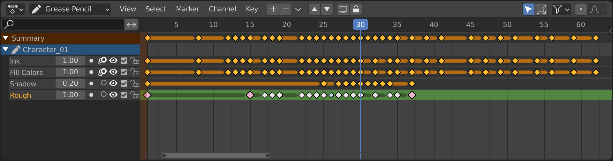

蜡笔¶
此模式用于调整 蜡笔 物体动画帧的时序。对于阻挡镜头的动画师来说尤其有用，其中重整时序阻挡的能力是整个过程的主要目的之一。
此模式可以通过将动画摄影表编辑器的 模式 选择器（位于标题栏的最左侧）更改为 蜡笔 来访问。
要使用此编辑器模式，请确保选择了 蜡笔 对象。

通道区¶
标题栏¶
- 图层移动
在评估堆栈中向上或向下移动选定的图层/通道。
- 图层添加/移除
添加/移除蜡笔图层/通道。
插入关键帧¶
插入关键帧（快捷键： I ）可用于在特定帧处创建空白蜡笔帧。如果 累加绘制 被禁用，它将创建空白帧，否则它将在该层上创建活动帧的副本，并使用它。
复制关键帧¶
可以使用 帧 菜单中的 复制 和 粘贴 工具将帧从一个层复制到另一个层，或从对象复制到对象。 请注意，关键帧将粘贴到选定的层中，因此请确保选择了目标层。
主视图¶
关键帧可以像 动画摄影表 中的任何其他数据一样进行操作。 插值关键帧（别名间断点）可视化为较小的浅蓝色点。